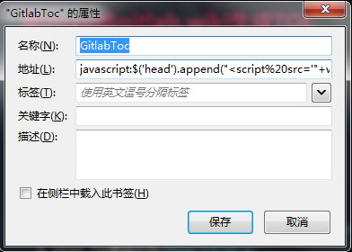
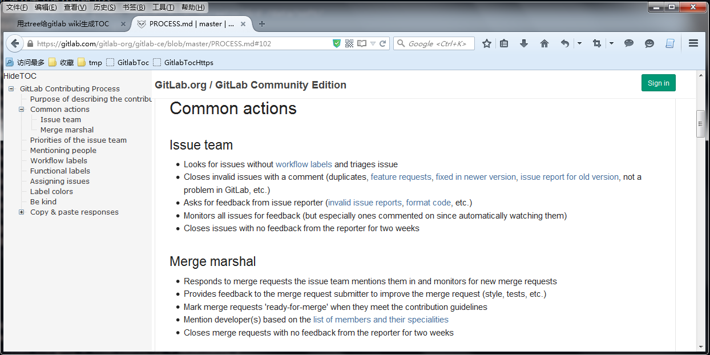

用ztree给gitlab添加目录导航
给gitlab的wiki和markdown页面生成目录导航(TOC:Table of Contents)，方便长篇Wiki内容的翻阅。
给gitlab wiki添加TOC
外部加载方式
通过jquery加载外部JS，达到给Wiki和markdown页面添加目录导航目的，测试在Firefox、Chrome、Safari中工作正常。
因在浏览器用js实现，不需要具有服务器管理权限、修改服务端模板，在gitlab服务器、gitlab.com均可使用该方法。
使用方法
-
将下面的代码做为"地址(L)"添加到浏览器书签中：
javascript:$('head').append("<script src='"+window.location.protocol+"//xstarcd.github.io/wiki/files/ztreetoc/ldztree.js'><script>");void(0);

- 进入gitlab的Wiki页面、或者md/markdown文件查看页面;
- 在wiki/markdown页面加载完成后，点击该书签，约2-3秒即可显示出目录导航。
说明
- 因资源加载和内容解析受网速影响，显示目录约需要2-3秒时间；
- 第一次使用可能因没有缓存而失败(如：空白的目录)，再点一次书签即可成功加载；
- 点击左上角的"HideToc"可隐藏/显示目录；
- 自动检测当前页面是wiki或markdown页面，才会生成导航，否则不会加载。
效果截图

其它
- 源码：ldztree.js
-
已知问题：
- 启用自动编号时(is_auto_number:true)时，所有标题上的链接会丢失。
-
github.com的HTTP Header中添加了CSP(Content Security Policy)控制，无法通过JS注入方式生成目录。
content-security-policy: default-src *; script-src assets-cdn.github.com collector-cdn.github.com;...
- github的Wiki或markdown可在chrome浏览器中安装github-toc插件来实现：
添加到模板
对于自己的gitlab服务器，可以将上面的ldztree.js添加到gitlabb模板中来实现自动加载目录导航。
Ztree及ztree_toc
- ztree
- i5ting_ztree_toc